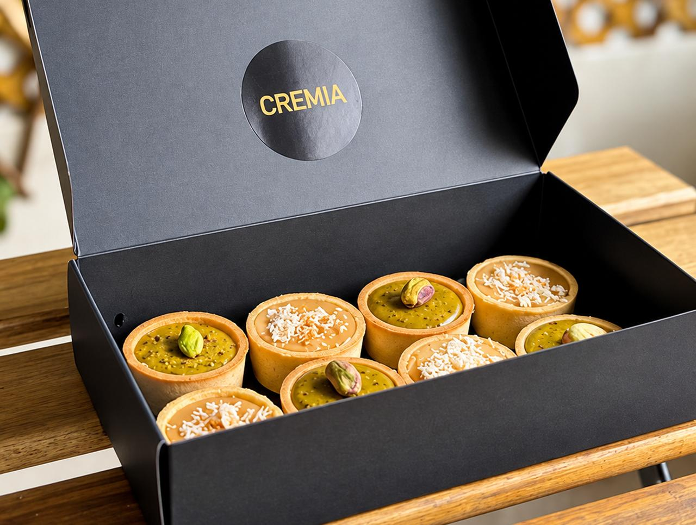
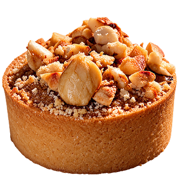
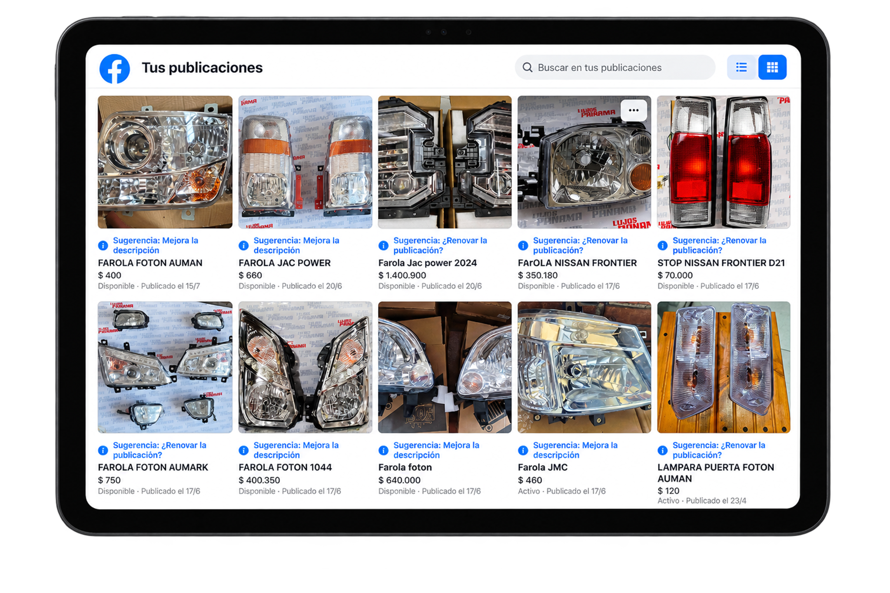
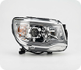
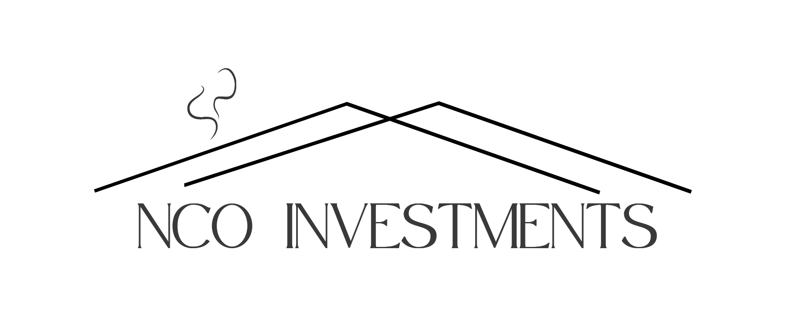

01. ENTENDER
Contexto, objetivos, audiencia y problema antes de idear.
PORTFOLIO
MARKETING · PUBLICIDAD · COMUNICACIÓN · RESEARCH

HOLA,
Marketing · Comunicación · Creatividad · Estrategia
Me gusta entender antes de crear.
Observar, investigar, ordenar ideas y convertirlas en algo que pueda funcionar.
CUANDO NO ESTOY TRABAJANDO
pasear · descubrir sitios · probar cosas nuevas · aprender
SIGUIENTE CAPÍTULO
Un proceso de trabajo diseñado para convertir la información en dirección estratégica y soluciones concretas.
Contexto, objetivos, audiencia y problema antes de idear.
Información, prioridades y datos para entender qué importa.
Estrategia, contenido y soluciones adaptadas al objetivo.
Analizar resultados, documentar hallazgos y mejorar.
Figma, Photoshop, Illustrator, Lightroom, Canva
GA4, Google Ads, Search Console, SEO, SEM
Excel, cuestionarios, análisis de datos, informes, planificación
Proyectos Seleccionados
Un recorrido por proyectos donde investigación, branding y estrategia digital se convierten en decisiones concretas.
Comprender cómo compra y evalúa un comprador profesional para orientar posicionamiento, captación digital y medición.
Investigación documental (desk research), análisis de mercado, comportamiento de búsqueda y construcción de hipótesis para validación.
Análisis, síntesis de hallazgos y traducción de la investigación en implicaciones estratégicas.
Comportamiento del comprador B2B en la selección digital de proveedores de tartas de queso y postres premium en el sector HORECA.

premiumdetalleproductoemoción
El análisis del mercado B2B y del comportamiento de búsqueda permitió identificar un entorno premium fragmentado y con oportunidades diferenciadas de captación digital.
El proyecto estudia la selección digital de proveedores de tartas de queso y postres premium en el canal HORECA.
Mercado B2B con foco en proveedores de tartas de queso y postres premium dentro del canal HORECA.
Comprender cómo compra y evalúa un comprador profesional para orientar posicionamiento, captación digital y medición.
Traducir la investigación en decisiones de posicionamiento, captación digital y prioridades de comunicación.
Investigación documental, análisis de mercado y comportamiento de búsqueda para construir hipótesis y orientar la estrategia.
El análisis del mercado B2B permitió identificar un entorno premium fragmentado con oportunidades de captación digital.
Empresa en el sector premium con foco en la selección digital de proveedores de tartas de queso y postres para el canal HORECA.
Investigación documental, análisis de mercado, comportamiento de búsqueda y construcción de hipótesis para validación.
Investigación de mercados, análisis de datos, síntesis estratégica y traducción de hallazgos en decisiones accionables.
El análisis del mercado B2B permitió identificar un entorno premium fragmentado y con oportunidades diferenciadas de captación digital.
Fuente: DBK Observatorio Sectorial (Informa), INE, CCOO y Guía Repsol · 2025–2026
El comprador profesional avanza por fases: busca, filtra, valida y contacta.
Carta o evento.
Google y referencias.
Web y catálogo B2B.
Fichas y casos.
Reputación y garantías.
Consulta o degustación.
La captación B2B tiene menor volumen de tráfico, pero mayor valor económico por contacto. Las búsquedas profesionales permiten identificar oportunidades comerciales de mayor calidad.

Fuente: Informe ejecutivo Cremia · desk research
Fuente: elaboración propia sobre el desk research de Cremia.
La investigación permitió identificar qué búsquedas presentan mayor intención profesional y cuáles pueden orientar la captación digital de Cremia.
Fuente: elaboración propia sobre el desk research de Cremia (16 keywords analizadas).
MATERIAL DE PROYECTO
Síntesis de desk research, análisis de mercado y comportamiento de búsqueda B2B.


La investigación permitió orientar prioridades estratégicas sobre mercado, canal, comprador y captación digital para Cremia.
423 hoteles 5★, 3.078 hoteles 4★ y 808 restaurantes con distinción.
El comprador profesional prioriza confianza y experiencia operativa frente al precio.
Las keywords revelan alta intención en postres gourmet y distribuidores HORECA.
SEO enfocado a restaurantes y hoteles para reducir el riesgo del chef.
La investigación no cierra preguntas; las precisa. Este proyecto demuestra cómo el análisis puede convertir información en dirección estratégica.
APRENDIZAJE CLAVE
La investigación adquiere valor cuando sus hallazgos se traducen en decisiones concretas para el negocio.
Las búsquedas profesionales revelan el momento exacto de evaluación. Escuchar esa señal es la base de cualquier estrategia de captación.
Un mercado fragmentado y en crecimiento permite a un actor selectivo posicionarse con claridad sin competir por volumen masivo.
SIGUIENTE CAPÍTULO
Estrategia de transformación digital, branding y captación omnicanal mediante Meta Ads, Marketplace y WhatsApp Business.
Empresa bogotana de repuestos y accesorios automotrices con amplia experiencia en el sector, pero con baja presencia digital y dependencia de los canales de venta tradicionales.
Tienda física con catálogo extenso, sin presencia online estructurada ni canales de captación digital.
Crear visibilidad de marca, organizar el catálogo digitalmente y abrir nuevos canales de contacto y venta.
Presencia online, nuevos canales de venta y comunicación directa con el cliente.
Una estrategia conectada para reforzar la presencia digital, organizar la oferta y facilitar la captación y comunicación con nuevos clientes.


Empresa de repuestos y accesorios automotrices con baja presencia digital y dependencia de ventas tradicionales.
Branding, redes sociales, campañas en Meta Ads, Marketplace, web/catálogo y WhatsApp como canal de comunicación directa.
Estrategia digital, comunicación de marca, gestión de canales, organización de procesos y atención al cliente.
Identidad visual alineada con el sector automotriz, construida para transmitir confianza, solidez y movimiento.
El símbolo combina las iniciales de Lujos Panamá S.A.S como una interpretación frontal del mundo automotriz, transmitiendo fuerza, movimiento y confianza.
“Más que repuestos, soluciones en movimiento”


Optimización y estructuración de los canales digitales para aumentar la visibilidad de la marca, organizar su catálogo y facilitar el contacto con nuevos clientes.
SITIO WEB
Diseño de un sitio web moderno, alineado con la identidad de la marca, que presenta la oferta de productos de forma clara y facilita el contacto por WhatsApp.

CATÁLOGO
Organización del inventario por familias para una búsqueda más rápida y sencilla. Cada producto incluye distintas marcas, medidas y opciones en una sola vista.

DE LA BÚSQUEDA A LA COTIZACIÓN
Una estructura clara conecta la consulta de productos con el contacto directo por WhatsApp.
Implementación de campañas en Meta Ads y activación de Marketplace para ampliar la visibilidad de los productos, generar consultas y abrir nuevos puntos de contacto y venta.
Meta Ads permite llegar a más personas del sector automotriz.
Consultas directas por WhatsApp.
Ventas a través de Facebook Marketplace.
Datos obtenidos de 4 publicaciones promocionadas en Meta Ads + Marketplace.

 Nissan Frontier · 120 mensajes
Nissan Frontier · 120 mensajes
JAC Power · 80 mensajes Persiana NPR · 30 mensajes
Persiana NPR · 30 mensajes58.800 COP
4 días por publicación
4 publicaciones simultáneas
Pasto · Medellín · Cartagena · Santa Marta · Barranquilla · Tunja
235.200 COP
Implementación de WhatsApp Business para establecer un canal de comunicación directa, ágil y personalizado con cada cliente.
RECORRIDO EN WHATSAPP
Descubrimiento · Interés · Contacto · Cotización
Consultas, asesoramiento y cotizaciones desde un único canal. Respuestas más rápidas, atención personalizada y seguimiento de cada solicitud.

¡Hola! Gracias por comunicarte con Lujos Panamá. ¿En qué podemos ayudarte?
Para ayudarte mejor, indícanos la marca, modelo y año de tu vehículo o envíanos una foto del producto.
Envíanos la referencia del producto y te confirmamos disponibilidad y precio.
Otros flujos configurados: disponibilidad, envíos y ubicación.
Cada herramienta —web, redes, Meta Ads, Marketplace y WhatsApp— cumplió un rol específico en el ciclo de captación, consideración y venta.
Meta Ads y redes sociales: visibilidad y generación de consultas.
Web, catálogo y Marketplace: puntos de contacto y venta.
WhatsApp: atención directa y cotización.
SIGUIENTE CAPÍTULO
ESTRATEGIA DE CONTENIDOS · REDES SOCIALES · BLOG · REELS · PLANIFICACIÓN EDITORIAL
Una estrategia de contenidos para reforzar la visibilidad y comunicación de NCO Investments en el mercado inmobiliario de Madrid.

Empresa inmobiliaria con el objetivo de aumentar su visibilidad digital y generar confianza en un mercado competitivo.
Empresa inmobiliaria con objetivo de aumentar su visibilidad y generar confianza en un mercado competitivo.
Definición de la estrategia de contenidos, tono de comunicación y líneas temáticas para redes sociales y blog.
Estrategia de contenidos · Copywriting · Diseño · Comunicación inmobiliaria
Desarrollo de contenidos adaptados a cada canal, combinando información, inspiración y contenido de valor para reforzar la presencia digital de NCO Investments.
ACTUALIDAD · ANÁLISIS · INVERSIÓN · PROYECTOS · MERCADO
Contenido profesional · análisis · actualidad


Contenido visual · inspiración · información


Redacción de artículos para el blog de NCO Investments sobre tendencias, actualidad y temas relevantes del sector inmobiliario, aportando profundidad y contexto a la comunicación de la marca.
SOSTENIBILIDAD
Cómo la eficiencia energética y los criterios ESG están transformando el mercado y generando nuevas oportunidades para inversores.
INNOVACIÓN
Cómo la digitalización está cambiando la forma de comprar, vender y gestionar propiedades, y por qué es clave para el futuro del sector.
Todo el contenido fue desarrollado conforme a una planificación editorial que permitió mantener una comunicación coherente, ordenada y alineada con los objetivos de la marca.
Calendarización editorial que garantiza consistencia y relevancia sin improvisar, asegurando que cada activo editorial refuerce la credibilidad e intención de negocio.
APRENDIZAJE CLAVE
El contenido responde a un objetivo concreto y forma parte de una estrategia de comunicación.
El contenido responde a un objetivo concreto y forma parte de una estrategia de comunicación.
Cada canal requiere un lenguaje propio: Instagram visual, LinkedIn profesional y blog especializado.
La planificación permite mantener una comunicación ordenada, constante y coherente con la marca.
Estrategia·Contenido·Adaptación·Planificación + Publicación
SIGUIENTE CAPÍTULO
Fundación Lesionado Medular · Madrid [Mar. 2026 - Jul. 2026]
Universidad Europea de Madrid
Pontificia Universidad Javeriana · Bogotá, Colombia
01.
02.
Llevada al proyecto real, la formación aporta la estructura formal y las herramientas conceptuales; los desafíos profesionales aportan criterio, resiliencia y agilidad para tomar decisiones.
La formación no termina con el título. Continúa cuando el conocimiento se convierte en mejores decisiones y en soluciones pragmáticas, construidas con rigor analítico.
Si quieres ver más del trabajo o conversar sobre una oportunidad,
el email es la vía principal para conectar.
TELÉFONO
+34 610 940 295